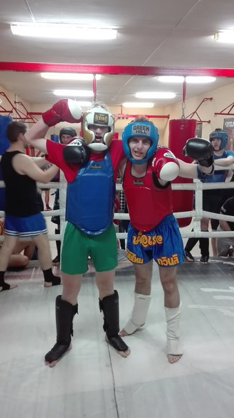
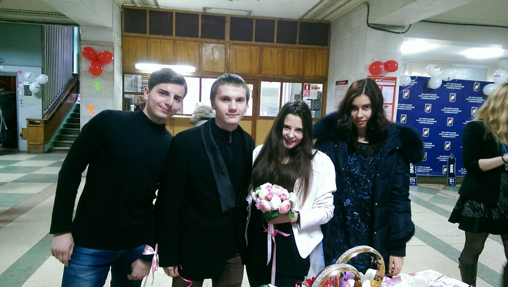
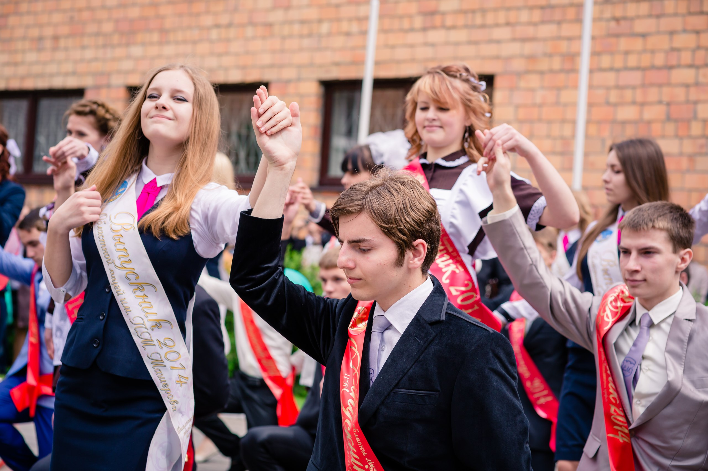

-
Немного увлекаюсь

Увлечения подобного рода дружат со мной уже очень давно. То каратэ, то Винг Чун, сейчас вот Муай тай. Жизнь не стоит на месте, нужно двигаться и будешь счастливее
-
Денис. Живу с немного неакватным парнем, но он бывает забавным

А вот он женится:

-
Александра Фагот
Просто обожаю этого человека! Всегда поможет, всегда окликнется. Хоть в ней и 160см, но ударить может, если ей что-то не нравится. Никогда ни под кем не ходит, ооочень гордая. Но также творческая личность: пишет стихи(которые публикуют не в одной стране), рисует, к музыке себя причинила. Девушка развивается всесторонне как только может. Ещё и со спортом дружна, кнги "съедает" одну за одной. Стоит брать пример
А вот нашлось фото с последнего звонка, мы выступали вместе

-
как-то затесалось сюда, непонятные вещи творятся
-
Натали
Ещё один солнечный человек с тучкой в душе, который ощутимо помогает мне идти вперёд. Надеюсь, я тоде смогу ей когда-нибудь помочь, но пока что это кажется слишком нереальным: девушка умна не по годам, весьма. И это здорово. Хотя немного непривычно ощущать такое доминирование над твоим развитием. Я учусь, избегаю ошибок. Иногда кажется, что успехи в этом деле есть.
-
Ириша :)
Очень солнечная девушка. Не уверен, что она может плакать. всегда с улыбкой, всегда подарит радость. Но и по делу может наговорить не самых лестных замечаний. Никогда не обижался на неё, сейчас уехала в Корею, чтобы подучить лучше язык.
|
|